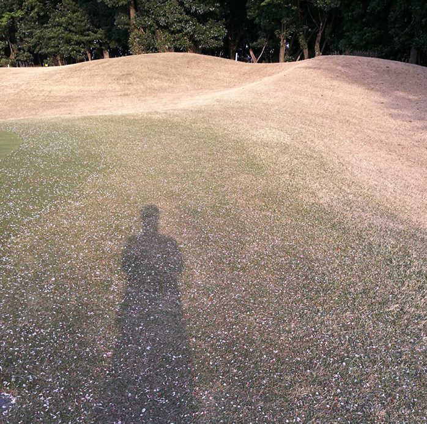
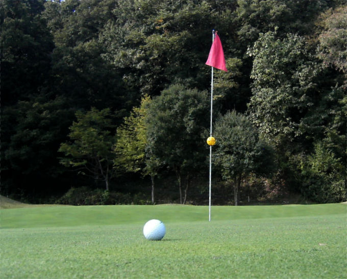

| アームチェアゴルファーの優雅な午睡〜ゴルフ・ショート・ストーリーズVol.1〜 | |
| 金子忠義 | |
| (2019) | |
ゴルフを続けていると、誰でも稀に、不思議な体験をする。
たとえばこんな話...。
第1話 再会は桜の木の下で
桜が満開の頃、私達のゴルフ仲間の1人がエースを出した。
いわゆるホールインワンだ。
そのコースの名物ホールで池超えの165ヤードPAR3、グリーン奥には桜が連なっており、とくに春先は池と桜と芝が鮮やかなコントラストを描いて美しい。
『彼』は40歳を過ぎてからゴルフを本格的に始めたが、練習熱心だったことから上達が早く、グリーンに乗せるだけであれば、それは彼にとってけっして難しいことではない。
そして、そのくらいの技術力を持っていれば誰でもピンを狙う。
後は偶然の為せる技。
エースというのは、そういうものだ。
だから、『彼』がエースを出したところで（もちろんそれは凄いことなのだけれども）不思議ということのほどではない。
不思議な物語だったのはその後。
このコースは今時、珍しくキャディが帯同するきちんとしたカントリークラブだった。ただし、昨今のゴルフ事情から平日に限ってビギナーだけでも受け入れをしており、仲間の1人がここでやりたいという理由から『彼』も同伴することになった。
「おめでとうございます。エースは初めて？」
初老の上品な女性キャディは次のプレイヤーの打球を注意深く見守りながら『彼』に小声で冷静に話しかけた。
「ええ、初めてなんですよ。しかもキャディさんがいるコースなんてホント、何年ぶりだか...」
「あら、よかったですね。ホールインワン保険、入っているんでしょ？」
ちなみに損保会社が扱っているホールインワン保険は同伴競技者の他、帯同しているキャディや当該ゴルフ場支配人の署名が必要となる。したがってセルフプレーでエースを出しても証明が難しいが、キャディ帯同であればまったく問題がない。だから初老の女性キャディは『彼』に尋ねた。もちろん、キャディへのご祝儀が欲しかったからではない。
「それが入っていないんですよ。まあ、入っていたとしてもエースで派手なパーティとか記念品を配るなんてするつもりはないし。帰りにあいつらの晩飯を奢らされるくらいは覚悟していますけれど」
笑いながら『彼』は答えた。
「そう、残念ねえ。私、このホールでエースを見たの20年ぶりだし、その人と同じ名字だから、その人の隣に植樹してくれたら記念になると思ったんだけれど...」
エースを出すと、記念樹をホールに贈呈するという風習が日本にはある。その費用もホールインワン保険が適用される。
女性キャディはチラッとティーインググランド横の、すでに5m以上の高さにまで成長していた桜を見ながら言った。
「そういや親父、ゴルフの話なんてロクにしたことなかったけれど、なんか1度だけ嬉しそうに話していたな。ホールインワン出したって...」
その言葉を聞いて、女性キャディは『彼』の顔を覗き込んだ。
「え？...な、なんですか？」
「ちょっと、こっち来て？」
女性キャディは『彼』の手を握って植樹の前に連れていき、先ほど見ていた桜のプレートを『彼』に示した。
『彼』は息を呑んだ。
打ち終わった残りの3人が『彼』の異変に気がついて回りに集まってくると、このコースを予約したリーダー格の男が言った。
「これ、お前の親父の名前...だよな？」
「ああ...間違いなく親父の名前だ」
「やっぱりねえ。お客さんの顔、どことなく『あの人』の面影が残っていたから、もしかしたら、と思ってね」
女性キャディの『あの人』という言葉に4人が反応して、女性キャディの顔を見た。
「え？...ちょ、ちょっと待って、待って！『あの人』っていってもそんな男女の関係じゃないわよ？ただ、あの頃は私も新米のキャディで、ここのメンバーさんにもずいぶん迷惑かけていたの。でもあの人、じゃなくてお父さん、すごく優しくしてくれてねえ...いつもチョコレートは他のメンバーさんより多くくれて...『頑張ってね』って声をかけてくれたのよ...」
「へえ...親父、優しかったんですか...」
「うん...ここのキャディさんとか売店のスタッフからも人気あったわよ？」
最近のゴルフ場ではキャディへの現品渡し、つまりチップを禁じているところもあるが、以前はキャディへチップを渡すのがひとつのマナーになっていた。
欧米スタイルではチップが習慣化しており、キャディにとってもチップは重要な収入源だ。
しかし日本の場合、キャディがつくとプレー料金にキャディフィが含まれるので、本来であればチップは必要ない。欧米スタイルの外国ホテルと日本の旅館を思い比べればご理解いただけるだろう。
とはいえ、ゴルフに限らず欧米スタイルはなんでも取り入れるのが日本の風習、なぜかキャディフィを払った上でチップを渡す習慣が生まれた。
日本人の多くはチップを渡すことに慣れていなかったため、誰でも分かりやすくキャディへチップを渡す方法として生まれたのが、コース途中にある売店が販売しているチョコレートだ。
1枚500円（もちろんコースによって値段は違う）で、これを2枚ほど購入し、キャディに渡す。
もちろん、キャディはそのチョコレートを食べるわけではなく、プレー終了後に売店へ戻して換金するという仕組み。
まるでパチンコ、パチスロの換金みたいだ。
「なんだか...ワガママな親父のことしか思い浮かばないな...」
『彼』は父親が植樹した桜を見上げた。
「とりあえず、グリーンに行きましょうか？」
女性キャディに急かされて全員がカートに乗り込んだ。
「お父さん、最近見かけないけれどお元気なの？」
「亡くなりました。桜の季節が終わる頃、7回忌を予定しています」
「そう...まだお若かったように思えたけれど...」
女性キャディは気を使ったのか、それとも昔を懐かしんだのか、それきり『彼』の父親のことを言わなくなった。
「お前、親父さんが存命中はゴルフのこと、嫌っていたものなあ...」
代わりにリーダー格の男が話かけた。
「ああ、長男のくせに正月からゴルフに行っちゃう男だったんだぜ？親戚が集まるっていうのに、その世話をおふくろに任せっきりだ。たまにおふくろの実家へ顔を出したと思えば、息子を連れて近所の練習場を見つけて行くんだもの。おふくろ、よっぽど腹が立っていたんだろう。親父が死んだ後でも、こぼすことといえばゴルフのことばかりだ...」
「そんなに嫌っていたのに、なぜゴルフを始めたの？」
女性キャディが問いかけると、残りの3人がニヤニヤと笑い始めた。
「こいつらに誘われたんですよ。そして散々カモられたんです。もう、悔しくて悔しくて。それから練習を続けたら、こんな面白いスポーツはない、と思い始めちゃって...」
「あらまあ、そんなところもお父さんとそっくりね」
女性キャディはクスクスと笑った。
「でもさあ、昔の親父なんて、みんなそんなもんじゃねえのか？...お前んちの親父なんていい方だよ。俺んとこなんて『火宅の人』だぜ？博打にのめり込んでさ、最後は自分の工場まで手放しちゃったんだぞ？」
「俺んちは酒だったな」
残りの1人が言った。
もう1人は押し黙った。
きっと、その男も同じような思いをしたのだろう。
そして、そういった親父を反面教師にして子供は育っていく。親父の背中は立派である必要はない。たとえどんな背中であったとしても、それに反発するのが子供というものだ。
カートが止まり、3人はパターを持つとグリーン脇で1列に並び、右手で帽子を取って胸に当て、左手を横に広げ、右足を少し引いて（いわゆるbowing and scrapeのスタイル）お辞儀をした。
「では、エースを出した王様からグリーンにお上がりください」
リーダー格の男が言うと『彼』は照れて苦笑いを浮かべ、それでも嬉しそうに、グリーンに向かった。
グリーン回りには桜の花びらが一面に広がり、レッドカーペットならぬピンクカーペットが敷かれたようだった。
グリーンに上がると3人のパットラインを踏まないようにしてカップを覗き込んだ。
タイトリストの3番。間違いなく『彼』のボールだ。
ピンを挿したまま、右手の人差し指と中指をカップに入れ、慎重にボールを取り出した。
それを見ていた3人と女性キャディが拍手をした。
『彼』は帽子を取って3人に軽く頭を下げ、それからピンを抜いて3人のパットが終わるのを待った。
ティーインググランドに並んでいた記念樹の日付は『彼』の父親がもっとも新しかった。
「親父が出して以来、このホールでエースは出ていないんですか？」
3人のボールを拭き終わって『彼』のそばに来た女性キャディに『彼』が尋ねた。
「そうねえ、私が知る限りでは。お父さん以来、植樹している人もいないし...なんだか、お父さんがここで待っていらしたみたいね」
『彼』はもう一度、ティーインググランドの記念樹を見た。
『彼』は確かに父親が存命中、ゴルフの会話をしたことがなかった。
しかし、鮮明に覚えている光景がある。
例の、母親の実家へ行きながら親への挨拶もそこそこに練習場へ抜け出してしまった時のことだ（母親から聞いた話では、義父母を相当、苦手としていたらしい）。
抜け出す代わりとして『彼』の子守を押し付けられた。
当時、小学生だった『彼』は打席の後ろにある座席で父親の打球を見ていた。
父親の打ったボールは低く、鋭い速さで飛び出していくと、やがて高く舞い上がり、それから長い時間をかけて落ちていく。
その打球は美しく、その練習場で同じような打球を放つプレーヤーは1人もいなかった。
やがて、父親の回りのプレーヤーは練習を止め、父親のスイングをじっと見ているようになった。
『彼』にとって、それはとても、自慢だった。
「...キャディさん、記念樹っていくらぐらい必要なんですか？」
「そうねえ、ここでは10万円って決まっているけれど...」
「10万かあ...」
10万円。エースの記念としてはけっして高い額ではないが、家に戻って妻を説得するにはいささか高い額である。
パットを終えた3人が『彼』の回りに集まってきて、リーダー格の男が言った。
「今、みんなと話したんだけれどさ、4人でそれぞれ2万5千円ずつ出そうよ。それならなんとか小遣いの範囲内でやりくりできるだろ。記念樹、植えろよ。親父さんの横に」
残りの2人も頷いた。
「ちょ、ちょっと待ってくれよ。そんな、悪いよ」
「気にすんなよ。俺達だってお前の桜と、お前の親父の桜が並んでいるところ、見たいんだよ。エースの祝い金だ。その代り、帰りの晩飯はお前持ちな？」
「俺、焼き肉がいいなあ」
「寿司でもいいぜ？」
3人は『彼』の肩を叩きながらカートに向かった。
「あら、男気のある仲間だこと。じゃあ、私も一口乗っちゃおうかな。1人2万ずつってどう？」
女性キャディが笑顔を浮かべて言った。
4人とも驚いて顔を見合わせた。
「いや、だって普通、キャディさんにご祝儀出すものでしょ？それを一口乗るなんて」
『彼』が言った。
女性キャディはカートに乗りながら唖然としている4人に言った。
「私ねえ、今日がキャディ最後の日なのよ。その日に、親子2代のエースを見られたんだもの。これって何かご利益、ありそうじゃない？」
そう言ってクスッと笑った。
彼はカートからもう一度、ティーインググラウンドの記念樹を見た。
親父が放っていた美しい飛球線はその後、ダウンブローで打ち込まなければ出せない球筋であることを知った。
脳裏に刻まれている打球は、今の自分では打てない。親父はどうやって会得したのだろう？
「...親父、今度は隣にいるから、じっくり教えてくれよ」
風が吹いて、桜の花びらが舞った。
後日、名物ホールのティーインググランド脇に20年ぶりの記念樹が植えられた。もちろん、『彼』の父親の隣である。
プレートの表には『彼』の名前と日付、そして裏には（異例のことだが）同伴者3人と、キャディだった女性の名前が記されている。
『彼』のところに届いた手紙によると、キャディだった女性は毎年、春に孫と一緒にこのコースを回るのが楽しみになっているそうだ。

ホールインワンにまつわる不思議な出来事は他にもある。
たとえばこんな話...。
第2話 真夜中の訪問者
その日、千葉のゴルフ場に出かける車の後部席で、今年40歳になる高木達也は妙に落ち着きがなかった。
高木は25歳で結婚、30歳でマンションを購入、1男1女に恵まれ、勤めている広告代理店では課長に昇進するなど人生の定石を計画通りに進めている男で、その対極にいるのが行き当たりばったりのライター人生を送っている助手席の守谷博信だ。
ちなみに運転している上野武宏、高木の隣の吉田克也を含めた4人は大学時代からの友人。
いたるところに靑山ありの人生を送っている守谷から見れば、順風満帆な高木の人生にも想定外のことが起きる。
大動脈弁閉鎖不全症。
それが高木の妻の身に起きた。
大動脈弁閉鎖不全症は心臓病の一種で、心臓の大動脈弁がうまく作動せず左心室に血液が逆流し、左心室の負担が大きくなる病気だ。
初期では自覚症状が比較的少ないが、進行すると心不全症に陥る。
幸い、高木の妻は定期検診で発覚したので進行状態が軽く、手術すればほとんど治癒でき、その外科手術の平均的な成功率は95％以上といわれている。
とはいえ、けっして簡単な手術というわけではない。
守護神と呼ばれるクローザーが3点のアヘッドを背負って9回裏に登板しても、火だるまになって降板することだってあるのだ。
高木の精神的不安は守谷たちにも十分推測できた。
妻の手術を控えているのにゴルフへ行くとは何事か！とお怒りの人もいろだろう。
しかし、病室で不安そうな顔をして（あるいは空元気を振る舞って）妻の手をじっと握っていれば手術が成功するというわけではない。手術をするのは医師であって、高木ではないのだ。
なにより、こういった状況に陥った時に強いのが女性だ。
守谷たちが見舞いに行った時、高木の妻が言った。
「病室に彼が長くいると鬱陶しくてしょうがないから、ゴルフへ連れ出してくれない？」
かくして、高木と守谷、そしてゴルフ仲間の2人が今、ゴルフ場へ向かう車の中にいるわけだが、高木の落ち着きのなさ、というより普段では感じられない奇妙な緊張感が伝わってきて、守谷は「やっぱり誘って失敗したかな？」と思い、運転している上野武司の顔を見た。
やはり上野も困惑した表情で「お前がなんとかしろ！」と目で訴えていた。
高木は堅実で計画的だが、つまらない男ではない。
とくにゴルフは。
持ち前の堅実な性格を活かし、6番アイアン1本という地味だが基本に忠実な練習を長く続けることができる。
計画性があり、理論派であることに加えて現実主義なので、アマチュアに最適なゴルフ理論にも詳しい。
自分ができることをきちんと実行する。
守谷のように自分のポテンシャルを過信して大博打（たまにマグレ当たりするから始末に悪い）したり、練習場でドライバーばっかり振り回し、あげく何ヤード飛んだと騒いでいるのとはワケが違う。
ゲーム中は目立たないが、上がってみるとだいたい、高木がトップだ。そして、マグレ当たりが続いた時だけ守谷が1打か2打の差で勝つ。
負けん気は仲間内でもっとも強く、とくに自分と何事も正反対の守谷にはライバル意識を持っており、いつも行きの車の中から舌戦バトルが始まっていた。
守谷としても、そういった高木の持つ負けん気が好きで、一緒にゴルフをするのが楽しみだった。
しかし今日、そんな雰囲気は高木の負けん気を突いても出てきそうになかった。
高木は、自分の心理状態が車の中で、回りの3人にどのような影響を与えているのか、そこまで考えている余裕はなかったが、自分自身が奇妙に緊張していることはよく分かっていた。
昨夜、だか今日の明け方だか、それは分からないが、とにかく夢のせいだ。
暗闇の中で、頭を数回、叩かれた。
寝ぼけ眼で枕元の眼鏡をかけ、頭を上げると月明かりの中、背の低い爺さんが立っていた。
チェックのハンティング帽を被り、ニッカーボッカーズを履いていて手にはステッキを持っている。おそらく、そのステッキで頭を叩いたのだろう。
「今日の13番ホール、5番アイアンでフルスイングだ。エースを出せば奥さんの手術は必ず成功する」
それだけ言うと、しわくちゃの顔を歪ませ（おそらく笑ったのだろう）、消えた。
次の瞬間、はっきりと目が覚めた。
...夢？
しかし、爺さんの言葉がはっきりと残っている。
13番ホール、5番アイアンでフルスイング、そしてエース。
高木は枕元に置いてあったスマートフォンを手に取り、ネットへつないで今日（か明日）行くコースの公式サイトを検索した。
13番ホールは確かにPAR3なのでエースが出る可能性はあるが、距離は155ヤード、しかも打ち下ろしだ。自分の飛距離なら7番アイアン、5番アイアンなんて使ったらエースどころか奥の林のO.B.に打ち込むだろう。
やっぱり夢だ。おそらく、今日のゴルフを上手くやりたいという自分の願望、妻の手術に対する不安が意識下でつながり、あんな夢になって再現化されたに違いない。
世の中には予知夢を信じたがる人もいるが、夢は脳が記憶をランダムに整理しているだけの現象だ。意味なんてない。さっきの夢はさっさと忘れて寝よう。
高木は夢を現実的に理解しようと努め、眼鏡を外して布団を被った。
...それから朝まで、目が冴えたままだった。
これが、精神状態を不安定にさせている理由である。夢ではなく寝不足。高木はそう思いたかったが、どうしても爺さんの言葉が何度も頭の中でリフレインする。
いっそのこと、こいつらに夢の話をしてしまえば気分もラクになるだろうけれど、言った途端に何をイジってくるか分からない。とくに守谷はたいした文章を書いているわけでもないのに、なぜか人をイジる能力には天性の閃きがある。
普段から「堅実」を「地味」と揶揄する守谷が今度はオカルティックな夢の話をしたら、どのようなイジりを発揮するのか？
毎回、「今日の夢のお告げはなに？」と先制パンチを食らっていては勝てるゲームも落とすことになる。
高木は守谷が人をイジる時に浮かべる悪魔のような笑顔を想像しただけで言う気が失せた。
エースか...。
そんなもん、松山英樹だって狙って達成できるものじゃないのに、なんであんな夢を見たのだろう。
頭の中で爺さんの言葉が駆け巡った。そして最後の言葉が引っかかった。
妻の手術は必ず成功する...。
それって、逆に言えばエースを出さなければ手術が失敗するってことなのか！
高木は頭を抱えた。
「高木、大丈夫か？」
「...えっ？」
高木が頭を上げると、隣席の吉田や助手席の守谷が顔を覗き込み、運転席の上野はバックミラー越しに見ていた。
「あ、いや、大丈夫...」
やれやれ。今日のゴルフ、いったいどうなるんだろう...。
その日、初めて4人が共通の認識を持った。
しかし、適度な緊張感は好成績を生み出す。
この日、高木の妙な緊張から全員がいつもと違う違和感を持ちながらも、ゴルフが始まると高木につられてレベル以上のスコアが出た。
とくに守谷は高木と一進一退が続き、毎回の泥仕合とは違った白熱の展開を繰り広げた。
そして迎えた13番PAR3。
通常、ティーインググラウンドにおける打順は1番ホールを除いて前のホールのベストスコア保持者から始まる。
13番は守谷が最初だ。
高木と飛距離がほとんど変わらない守谷が7番アイアンで打つと、ボールはピン手前5ｍのグリーン上に止まった。
守谷は高木に向かって派手なガッツポーズ（もちろんマナー違反である）をしたが、高木は守谷の打球をまったく見ておらず、今もカートの後ろで右手に7番、左手に5番アイアンを持って迷っていた。
夢は単なる記憶の整理と願望の表れ、それを信じて5番アイアンを持つなんて俺らしくない、第一、風もないのに5番アイアンでエースなんて馬鹿げている...。
高木は左手の5番アイアンをキャディバッグに戻そうとした。
...エースを出せば、必ず奥さんの手術は成功するんだぞ？
頭の中でまた同じフレーズが響いた。しかし、高木にはそれが爺さんの声なのか自分の声なのか分からなくなっていた。
「おーい、高木。お前の番だぞ！」
「ああ、すまん。今行くよ」
ティーインググラウンドに上がってボールをセットする高木。その手にしていたクラブを見て、残りの3人が驚いた。
5番アイアン。
いつもならクラブの選択ミスに「高木、ピン見えてる？」とか「いつからそんなに飛ばなくなったの？」とか、とにかく茶々を入れるのだが、高木の真剣な表情に気圧されて誰も何も言えず、吉田の固唾を飲み込む音だけが聞こえた。
高木がフルスイングすると、小気味よい音を立てて真っ青な秋の空に舞い上がった。
その飛球線はとても美しかった。
おそらく、高木がこれまで数多く打ってきたショットの中でもトップに入るほど完璧だった。
しかし、明らかに飛びすぎている。
その瞬間、奥の雑木林の枯れ葉が暴れるように吹き飛ばされ、ボールが上空で止まった。
突風が間を置かずティーインググラウンドまで届くと、高木の薄い前髪を巻き上げた。
高木が打ったボールはやゆっくりとグリーンに落ち、守谷のボールをまたぐように跳ねると左へ弧を描きながら転がっていった。そのライン上にはカップがある。
「入れ！」
守谷と上野と吉田が同時に大声を上げた。
ガシャン、とボールがピンに当たり、そのままカップに落ちた。
4人が唖然とした。それから高木を除く3人の歓声。
高木はフィニッシュのまま固まっていた。眼鏡が半分、ずり落ちていた。
それから駆け寄る守谷に「...見えた？」と一言。
「ああ、もちろん見たよ！すげえ！エースだぞ！仲間内で初めてのエースだ！」
「すげえな！風を予測してたのか？松山だってそんなショット打てないぞ！」
守谷も上野も吉田も興奮していた。
だから、高木が真っ青な顔をしていても、それがエースのせいだと信じて疑わなかった。
この1打で、それまで好作用していた緊張感が一気に解されたのか、残りのホールは4人とも総崩れで上がってみればいつもと変わらぬスコアに収まった。高木は1打差で守谷に勝った。
1週間後、高木の妻の手術が行われた。結果はもちろん、無事成功した。
この程度の話なら、たいして不思議というほどのことでもない、偶然の産物と思われる人もいるだろう。
しかし、この話はもう少しだけ、続く。
高木の妻が手術から回復、退院した後のことだ。
高木は妻の見舞いの礼とエースの記念を兼ねて前回、一緒に回った3人を居酒屋に呼んだ。
話題は高木の妻の全快と、そして13番PAR3のエース。
どちらも明るい話だし、しかも高木が主役で若干のイジりは入っているものの称賛が集まっているのに、高木の表情は冴えなかった。
「いや、この前のゲームは守谷の勝ち、正確に言えば俺は失格なんだよ...」
3人は顔を見合わせた。まったく意味が分からず無言でいると、
「実はな...妻が回復するまで確証が持てなかったから言わなかったんだけれど...」
そう、前置きをして夢の顛末を語った。
「すげー、あの地味、いや堅実で現実主義の高木が夢のお告げにしたがうなんて。これからはスピリチュアル高木様と呼ばなきゃ！」
と守谷が例によって（悪魔のごとき笑いを浮かべながら）茶化すと高木は守谷を睨んだ。
「ほらな、ゲームの前に夢のことを言ったら絶対、こいつはこうやって茶化したはずなんだ。それにこいつ、これから先、ずっと言うぜ？だから俺は言うの嫌だったんだよ！」
上野が肘で守谷を突いた。
「悪かった。ごめん。言わない。言いません」
それでも守谷の口の端は歪んでいた。
「でもさ、夢を見て、その通りに打ったからって、それが失格になるわけじゃないだろ？」
吉田が言うと上野も続けた。
「それに結果としてエース出して、しかも奥さんの手術が成功したんだ。良かったじゃないか。なんでそんな浮かない顔をしているんだ？」
「そうだな...」
高木は力のない作り笑いを浮かべた。
「でもさあ...不思議っていやあ、不思議だよな...」
「あの、突風のことか？」
上野が聞くと、守谷は頷いた。
「あの日、風が吹いたのってあのホール、あの瞬間だけだったからな。それから、もうひとつ...まあ、それは後で言うとして...」
守谷が（珍しく）神妙な顔で言った。
「続きがあるんだろ？聞かせろよ？」
高木はしばらくビールの入ったグラスを見つめていた。居酒屋特有の騒音が彼らのテーブルから少しずつ遠のいていった。
「夢と、実際のエースと、それからカミさんの手術。これをつなぎ合わせる根拠は何もないんだ。いつものように自分の飛距離の番手、７番アイアンで打ったら、突風も吹かずエースも取れず、でもカミさんの手術は成功したかもしれない...」
「大動脈弁閉鎖不全症は心臓病手術の中でも成功率が高いからな。天秤にかけたら偶然性に頼るエースが重すぎるだろう」
「自分でも夢と現実を結びつけるなんて馬鹿げている。エースなんか取らなくても手術は成功するって頭では理解していたよ...。でも、気持ちの中には『もし、７番アイアンで打ったら自分の世界はどうなるんだろう？』って不安がこびりついていてさ、それをどうしても払拭できず、気がついたら５番アイアンを振り抜いていたんだ」
「7番アイアンで打った後の世界？」
「絶対に成功すると言われた手術が突発的な、何らかの事情で成功しなかった世界、だな？」
吉田の問いに守谷が答えると、高木は無言で頷いた。
「もし、その突発的な、何らかの事情や要素の可能性が潜んでいたとしたら、あんな夢は見なかったんじゃないのか、そう思えて仕方がない」
「...ま、まあ、仮説だろ？現実は5番アイアンでエース、奥さんの手術は成功。7番アイアンの世界はあくまで想像のことじゃないか。そうだろ？」
高木に続いて現実主義の上野が、まるで話を打ち切ろうとするように言った。
「しかし、それじゃあお前が失格になる理由にならないし、もうひとつの俺の不思議も解決しない」
守谷が言うと、高木はそれを予測していたかのように間髪入れず答えた。
「ラインだろ？」
「ああ。お前の打ったボールは俺のボールをまたいで左に弧を描いてカップインした。俺だってバーディチャンスだ。お前と同じといってもしっかりラインを読んだよ。しかし、どう見てもストレート。スライスじゃない。でも、俺の頭にはお前の軌跡が残っていたから、スライスのつもりでパットした」
「お前のボールは曲がりもせず、まっすぐ進んだ。たぶん、あれが正しいラインだよ」
高木は平然と、守谷の顔を見ずに言った。
「そういえば守谷、あのパットを打ったあとでずいぶん、首を傾げていたよな」
上野が言った。
「や、止めようよ、こういう話！」
吉田が無理に作り笑いをしながら言う。
「思い出した...」
吉田と上野が守谷を見た。血の気が引いて真っ白な顔だった。
「あの時...お前、『見えた？』って言ったよな？普通、『見た？』とか『見たか！』だろ？」
高木は黙ったまま頷いた。
「お前...何を見たんだ？」
「7番アイアンの世界は仮説じゃないんだ...」
一瞬、高木の眼鏡が光を反射して高木の眼差しが見えなくなった。
「いたんだ、グリーンの上に夢に出てきた爺さんが。...俺の転がるボールをステッキでコツンと突いてラインを変えたんだよ...それが、俺の失格の理由だ」
「...でも、それが本当だとしても、それは5番アイアンの世界だ。お前が言う7番アイアンの世界じゃない...その後、爺さんは？」
守谷の声は震えていた。
「爺さん...エースになったことを確認すると俺を見向きもせず、奥の林の中に消えていった...」
高木の眼鏡がまた光った。
「ただ、爺さんが消える直前、その隣に黒いマントを来た奴がいた...。俺を見たのはそいつだ...そいつがきっと、7番アイアンの世界を作る奴だったんだ。」
もう、誰も何も言わなかった。
「ギラギラした眼を俺に向けて、ニヤッと笑ったように見えた。まるで『よかったな、奥さんの魂、俺に差し出さなくて...』とでも言っているかのように...」

さて。
高木とその仲間がゴルフで体験した不思議な話はこれで終わりだが、これを書いている私も不思議な体験をしている。
それも頻繁に。
朝、自宅を出て仕事場に向かっているつもりが、気がつくとゴルフ練習場にいるのだ。
じつに、不思議である。いや、本当に。